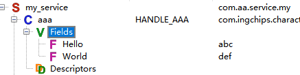

1. 可以在哪些操作系统下进行 ING918 项目开发？
SDK 支持 Windows、Linux、mac OS。但有的 IDE 不支持 Linux、mac OS。
2. 如何快速评估射频性能？
-
方法 1：使用蓝牙综测仪评估
-
通过
ingWizard主菜单 Test → Download BQB RF Test Binary 下载 BQB 测试程序； -
将 HCI 串口连接到蓝牙综测仪进行自动测试。
串口参数：
- 二线串口，无硬件流控
- TX、RX 分别为 PIN 2、3
- 波特率：115200
- 数据位：8
- 停止位：1
- 校验：无
` `
-
-
方法 2：使用频谱仪评估
-
通过
ingWizard主菜单 Test → Download BQB RF Test Binary 下载 BQB 测试程序； -
通过
ingWizard主菜单 Tools → More → BQB RF Test 打开测试工具； -
通过 BQB RF Test 工具控制设备发送 CW 信号，使用频谱仪观察信号强度、频偏。
或者，
- 自行开发程序，调用
gap_vendor_tx_continuous_waveAPI 发送 CW 信号，使用频谱仪观察信号强度、频偏。
` `
-
-
方法 3：使用开发板做简易评估
详情。
3. 如何抓取 log？
针对不同的问题需要抓取不同类型的 log：
-
死机（出现 HARD_FAULT、ASSERTION、HEAP_OOM 等事件）
此时需要抓取存储转储（Memory Dump）及各寄存器的值。Memory Dump 有两种方法：
-
通过调试器抓取
具体步骤可参阅用户手册。
对于启用了省电模式的场景，建议在出现问题之后，再挂接调试器抓取 log。某些 IDE 在挂接调试器进入调试模式时，总是会复位芯片，所以推荐使用 J-Link Commander。
-
使用代码导出
trace.c模块里提供了trace_full_dump函数。将这个函数放到HARD_FAULT、ASSERTION、HEAP_OOM等事件的回调里，就能实现自动转储。UART GATT Console 示例演示了这个函数的用法，通过串口输入assert可主动触发 ASSERTION 并自动转储。
-
-
蓝牙协议层面的问题
此时需要可以抓取芯片内部的 Trace 以及（或者）空口 log。
-
芯片 Trace
工程向导在新建工程会自动添加芯片 Trace 的相关代码。当使用芯片 Trace 功能时，需要禁止系统进入深睡眠模式。
-
空口 log
使用 Ellisys Bluetooth Tracker、 Sodera Series of Bluetooth Protocol Analyzers 等蓝牙空口抓包工具。
另外也可以从对端设备抓取自身的 log。不同操作系统上的参考方法如下：
-
Windows：使用 Bluetooth Virtual Sniffer 实时抓取 HCI log；
-
Linux：Blue-Z 协议栈可通过 hcidump 命令抓取 HCI log；
-
Android：在开发者工具里勾选 “Enable Bluetooth HCI Snoop Log”；
-
iOS：借助 iOS Trace 抓取 iOS 设备的 HCI log。
-
4. 如何进行空中升级？
这里 是空中固件升级（FOTA）的快速演示。
-
服务端：为蓝牙设备加入升级服务
ingWizard可以在新建项目时自动添加 INGCHIPS FOTA 服务。 也可以自行设计 FOTA 服务。 -
客户端：对于 INGCHIPS FOTA 服务，提供以下使用不同语言开发的升级程序、工具：
5. 如何查看 SDK 示例的 Markdown 文档？
Wizard 会把项目里的 doc/index.md 文件识别为文档，通过 “More info…” 菜单可直接打开这些 Markdown 格式的文档。
Wizard 内置的查看器存在不足（例如：不支持代码高亮），建议使用外部工具查看。配置步骤如下：
-
准备 Markdown 文档查看器
只要装上 Markdown Viewer 扩展， 浏览器就可以充当 Markdown 文档查看器。
-
使用 Edge
-
从 Microsoft Store 安装;
-
进入“扩展” → “管理扩展” → “Markdown Viewer” → “详细信息”，勾选“允许访问文件 URL”，如图所示。

-
-
其它浏览器（Chrome/Opera）
请参考 Markdown Viewer 文档。
-
-
打开 Wizard 设置（Options），填入 Markdown 文档查看器的路径。

6. Wizard 里跨芯片家族（如 ING68xx <-> ING9188xx）切换时出错，如何解决？
在 Wizard 里跨芯片家族（如 ING68xx <-> ING9188xx）切换工程的芯片型号时，有时会出现如下错误：
解决方法：进入工程的源代码目录，会发现多个 startup_ing… 文件，确认无误后，将不需要的 startup 文件移出， 然后重新切换工程的芯片型号。
7. Wizard 里如何为自定义服务的特征添加字段（Fields）？
蓝牙 SIG 定义的特征带有字段，Profile Editor 能够显示这些字段。实际上，Profile Editor 仅是显示而已，没有其它功能。所以，对于自定义的特征，目前没有提供编辑字段的工具。
如果开发者需要使用这种字段显示功能，那么可通过编辑 JSON 文件手工添加字段：关闭 Wizard，打开 SDK/wizard/cfg/user_characteristics.json，找到要修改的特征，修改 Value，例如：
{
"com.ingchips.characteristic.test": {
"value": [{
"name": "Hello",
"format": "abc"
},{
"name": "World",
"format": "def"
}],
"mandatory": false,
"uuid": "........"
}
}
上面就为 test 特性添加了两个字段，第一个是类型为 abc 的 “Hello”，第二个是类型为 def 的 “World”。 再次打开 Profile Editor 可看到新添加的字段：

8. 手动升级 SDK 时步骤太烦琐，如何简化？
对于通常情况的 SDK 版本升级，在控制台（终端）里带上 /silent 参数运行安装包，
可以沿用以前的设置迅速完成升级。
ingchips_sdk_setup_vX.Y.Z.exe /silent
当开发工具发生变化（比如更新了 Keil、Gnu 工具链）时，可用普通模式安装。
9. SDK 自动升级时出错，怎么办？
如果出现如下错误信息：
请 下载 update.json，替换 SDK/wizard/data 目录里的同名文件，然后重试。
10. 升级到 Keil μVision 5.39 后程序无法启动？
请使用 Wizard 新建一个 Keil 项目，用新项目里的启动文件（startup_ing91xxx.s） 替换掉旧项目里的启动文件。
11. Keil μVision 5.39 + JLink，无法下载、调试程序，如何解决？
打开项目目录下的 JLinkSettings.ini 文件，更改 Override 和 Device 两项设置，如图：
- ING916: Device 修改为 “Cortex-M4”
- ING918: Device 修改为 “Cortex-M3”
12. 通过 Wizard 用 VSCode 打开 GCC 项目，无法编译，如何解决？
- Windows: 请确保 Wizard 选项窗口里 VSCode 可执行文件关联到 VSCode
bin目录下的code.cmd，而不是code.exe。
13. Keil μVision 链接时报错 “Error: L6244E: Exec region RW_IRAM1 address … not aligned on a N byte boundary”，如何解决？
这种现象在使用 v6 编译器时可能遇到，其中 N 大于 8。有多种解决方法：
-
在 Options for Target 的 Linker 页面添加 Misc controls 参数
--legacyalign；说明：v5 链接器默认
--legacyalign，v6 链接器默认--no_legacyalign。 -
检查代码，N 字节对齐是否确有必要；
-
手动增大 IRAM1 起始地址，使其符合对齐要求（不推荐）。